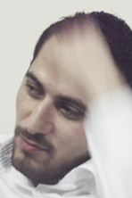

ВМЕСТО ТОГО, ЧТОБЫ НАВЯЗЫВАТЬ СВОИ ИНТЕРЕСЫ, МЫ ДОЛЖНЫ ИХ КОНСОЛИДИРОВАТЬ
И я, и вы много слышим и читаем про конфликты на Южном Кавказе, которые я называю не конфликтами, а Трагедией народов Южного Кавказа.
Я сам родился в Грузии, в маленьком селе Квемо-Сарал. Это село находится в Марнеули, в районе, где азербайджанцы, грузины, армяне, греки и другие народы живут вместе, не только как граждане одной страны, но и как часть единого социо-культурного общества.
В силу жизненных обстоятельств мне довелось окончить среднюю школу в Грузии, бакалавриат – в Баку, затем магистратура - в Турции. Во время учебы в университете я начал изучать конфликты и всегда старался не связывать конфликты на Кавказе только с политикой, или какими-то внешними игроками, а понять их суть. Для меня важна была роль самого народа, который пережил этот конфликт. Во время моих исследований я пришел к выводу, что многие проблемы у нас из-за того, что мы используем неправильную терминологию для описания конфликтов, выявления проблем в нашем регионе и понимания их сути.
Эти два фактора дали мне понять потребности и интересы этих народов, по отношению к которым в прошлом мое мнение создавалось под влиянием грузинской и азербайджанской государственной пропаганд. Я, узнавая потребности и интересы этих народов, смог еще лучше проанализировать ситуацию, сравнить их интересы и потребности с другой частью трагедии. И с каждым разом я понимал, что наименование самого конфликта, его отдельного момента, может сыграть большую роль в выходе из тупика и привести к разрешению конфликта.
Мне помогли во многом обстоятельства: в Грузии я близко общался с армянами, а во время учебы в Стамбуле я приобрел друзей из Абхазии. Эти два фактора дали мне понять потребности и интересы этих народов, по отношению к которым в прошлом мое мнение создавалось под влиянием грузинской и азербайджанской государственных пропаганд. Зная точку зрения этих народов, я мог лучше анализировать ситуацию, сравнить их интересы и потребности с интересами и потребностями противоположной стороны конфликта/трагедии. И при каждой попытке анализа, я убеждался, что то, как описывается сам конфликт, его отдельные моменты, может сыграть большую роль в выходе из тупика и может привести к разрешению конфликта.
Далее, хочу с вами поделиться моей точкой зрения по конкретным терминам и случаям, с которыми я сталкивался и сам использовал.
Не Возвращение,
Как мы все знаем, в отношении конфликтных регионов есть общеупотребительное выражение - Возвращение Территорий. Рассмотрим его на примере южнокавказских конфликтов.
Азербайджан и Грузия постоянно повторяют: «мы вернём наши земли», и конфликтные регионы со своей стороны воспринимают все подходы и политику этих государств как свое возвращение вовнутрь чего-то большого, где их права не будут защищены, или оттуда их могут вообще выдворить, изгнать.
Я думаю, что само словосочетание “вернуть земли” неправильно: нам не земли важны, а люди, которые на этих землях живут, мы должны о них думать, об их нуждах и интересах, об их будущем.
Поэтому мы должны говорить не о возвращении земель, а об объединении со своими же соотечественниками. Фактором должны быть не земли, а люди. Вопрос должен быть поставлен не как возвращение кого-то кому-то, или маленького к большому, а как объединение частей организма, для того, чтобы этот организм функционировал еще лучше, чем он функционирует сейчас.
Я очень хотел бы, чтобы эти проблемы рассматривались и в человеческом измерении. Считая эти конфликты политическими, мы всегда стараемся отбросить свою человеческую ответственность, предпочитаем переложить свои обязанности на политиков, тем самым по своей воле становимся жертвами политических интересов и игр, которые ведутся над нами.
Я за то, чтобы мы, простые граждане, больше акцентировали тот факт, что эти конфликты не политические, а как раз человеческие, и их жертвами стали не политики, а простые граждане, так как у нас, если смотреть в человеческом измерении, не конфликт, а трагедия. Когда я говорю у нас, я имею в виду обе стороны конфликта. Из-за земель мы вообще забыли о человеческом факторе.
Не конфликт
Наша самая большая беда в том, что мы боимся называть эти конфликты трагедиями, потому что мы сразу же думаем: “Трагедией какого именно народа это будет?”. А ведь это трагедия человеческая, и тут его по народам или конфессиям делить невозможно. Каждая сторона хочет показать, что именно она изранена, оскорблена, унижена и разрушена больше, чем другая. А разве это важно, кто сколько страдал? Или важно что пострадал человек, человек, за которого мы должны бороться.
Мы должны просто смело сказать: у нас не конфликт, а трагедия, и так как это трагедия, в ней нет победившей стороны, здесь есть только проигрыш. И мы не можем по отдельности выйти из этой трагедии. Мы, обе стороны, пережили это, и мы же должны найти выход из положения, которое с каждым днем все сильнее загоняем в тупик.
В Азербайджане я учился в Бакинском государственном Университете, на факультете международных отношений, на факультете, который готовит будущих дипломатов Азербайджана. Я помню, что все мои однокурсники, и я в их числе, были под пропагандой реванша за Карабах, да именно военного реванша, с желанием нанести ущерб армянам, так как мы чувствовали свой ущерб, это внедрялось в нас властью. Сегодня многие эти мои друзья уже работают в МИДе Азербайджана, и все они до сих пор под влиянием военной риторики и пропаганды государства. И только представьте: мы надеемся на выход их этой трагедии с помощью таких дипломатов, которые сами являются продуктами пропаганды, которой болеют обе стороны.
Помню, когда Рамиль Сафаров топором убил своего спящего однокурсника Гургена Маркаряна, будучи под влиянием государственной пропаганды, я считал его героем. В процессе свое саморазвития, я постарался посмотреть на эту трагедию с точки зрения человеческих ценностей, и, вырвавшись из оков пропаганды, понял, что Рамиль Сафаров - преступник, хотя и сегодня он выпущен на свободу.
Как можно говорить: «мы хотим урегулировать конфликт мирным путем”, и в то же время при каждом случае говорить «о возвращении земель любым способом»? И другая сторона тоже заявляет: «мы готовы к мирному решению» , но в то же время «мы никогда не уступим земли, завоеванные кровью». С другой стороны утверждение о том, что от родины не отступают, загоняет ситуацию в тупик, и это ведет, в конечном итоге, к военному напряжению, а это только усугубляет трагедию, создает новые линии и новых носителей трагедии в следующем поколении.
Трагедия общая,
Среди экспертов часто повторяется мнение, что все конфликты на Южном Кавказе одинаковы, имеют одинаковую причину, а потому и урегулирование их должно осуществиться одинаковыми способами. Давайте проанализируем, насколько суть, сущность данных конфликтов похожа.
Из чисто научного подхода хочу отметить, что, хотя мы и называем Карабахский и Юго-Осетинский конфликты результатами сепаратистских движений народов этих регионов, факт в том, что здесь сепаратизма нет, и это не национально-освободительное движение, а скорее ирредентистское движение, где одна часть народа хочет объединиться с близким себе народом. Конечно, тут важен вопрос: почему эти народы не считают азербайджанцев и грузинов близкими себе народами? Или наоборот: почему титульные нации не смогли признать эти народы равноправными себе, и консолидировать их интересы и потребности со своими?
Карабахский и Юго-Осетинский конфликты, являющиеся началом ирредентистское движения, отличаются от Абхазского конфликта, который основан на сохранении самобытности и культуры самого народа.
Дело в том, что если конфликтный процесс начался как движение ирредентизма, то в его решении должен учитываться не только факт самого Карабаха и Южной Осетии, но и тот факт, что есть Армения и Северная Осетия (Российская Федерация), куда они тянулись. И так как они своей привлекательностью дали толчок процессу ирредентизма, так и они могут дать толчок к решению конфликта. Поэтому на эти страны не надо смотреть как на врагов, а наоборот, надо рассматривать их как фактор, который может помочь в разрешении конфликта.
Но сколько бы мы ни говорили об общей трагедии Южного Кавказа, здесь тоже есть свои особенности. Например, в Карабахском конфликте народная дипломатия очень слаба, оба общества, особенно азербайджанское, имеют ненависть друг к другу, контакты обыкновенных людей почти на нулевом уровне, и оба правительства вроде бы и поддерживают это положение, несмотря на их всевозможные высказывания о мире и мирном разрешении конфликта. В конфликтах Абхазии и Южной Осетии, наоборот, у грузин к абхазам вцелом нет ненависти (а может быть она просто со временем угасла). Хочу сказать, что если даже Карабахский конфликт на политическом уровне разрешится, то на народном уровне еще немало времени понадобится для сближения нового поколения, то есть очищения их мозгов от той пропаганды, которой набила их власть за все эти годы.
Я, представитель национального меньшинства Грузии, из своего опыта могу сказать, что в появлении, а потом и допущении эскалации конфликта, и сейчас в его неразрешении, большая ответственность лежит на интеллигенции, на писателях и других деятелях культуры.
Как я уже сказал, за решение конфликта должен взяться народ, но ведь у народа должны быть свои представители, представители не в политическом смысле, а в народном. Это и есть интеллигенция - писатели и деятели культуры. Они не должны были молчать во время столкновения в Эсгеране, во время Сумгаитского погрома, или во время выдворения азербайджанцев из Армении и армян из Азербайджана. Они тогда молчали, и сегодня молчат, и это только на руку властям и политикам, которые действуют без каких-либо препятствий.
Если я скажу, что нас всех из этой трагедии выведет интеллигенция, деятели культуры, писатели, - не ошибусь, но эта власть как раз умышленно их сломала, их сделали неуважаемыми людьми в глазах народа.
Они тоже порой подпадают под пропаганду или из-за каких-либо интересов становятся жертвами националистических идей, хотя люди культуры всегда должны ко всему относиться исходя из универсальных ценностей. Приведу пример. В Грузии, в Квемо-Картли, конкретно в Болниси, в 1992 году изменили наименования 31 азербайджанонаселенного села. До сегодняшнего дня ни один деятель культуры, писатель, эксперт политики и конфликтов в Грузии ни разу не сказал: «Люди, что вы делаете? Куда мы идём? Ведь мы сами ставим мины будущей ненависти друг к другу, мины не доверия друг к другу.» Простой народ Квемо Картли мог бы подумать, что это ошибка власти, ошибка местного самоуправления, но когда вся Грузия молчит при такой несправедливости, тогда у простого народа не остаётся иного выбора, как сказать, что все грузины несут ответственность за изменение наименования этих сел. Когда мы требуем от де-факто руководителей Южной Осетии, чтобы те перестали изменять наименования грузинских сел, тогда мы должны вспомнить случай в Болниси.
Все раны, которые мы наносим друг другу, одинаковы, и пока не дадим этому оценку, без национальных штампов, исходя из общечеловеческих ценностей, не сможем понять друг друга. Наша трагедия в том, что мы не понимаем друг друга, и поэтому ищем какие-то организации, третьи страны, арбитра, который нам объяснит, что наши проблемы - общие.
Надо менять эти понятия: наша правда - ваша правда, наша справедливость - ваша справедливость. Такого нет. Есть общее понятие справедливости, и здесь мы уже не говорим: изменение наименований грузинских или азербайджанских сел. Мы должны принять сам факт изменения наименования сел несправедливым, независимо от того, кто проживает в этих селах – грузины или азербайджанцы.
В создании тупика большую роль сыграло устранение народов как сторон конфликта, и вообще неправильное установление сторон конфликта.
Азербайджан, после подписания договора о прекращении огня, сразу же устранил Карабах как сторону конфликта, и поставил вместо него саму Армению, которая с удовлетворением приняла эту позицию. Это, в свою очередь, привело к тому, что переговоры остались в рамках только узкого круга политиков. Принимая Армению как сторону конфликта, Азербайджан все свои рычаги принуждения применял не к Карабаху, а самой Армении, и поэтому были ограничены встречи не только с карабахцами, но и с армянами из Армении. Это и привело к тому, что уровень народной дипломатии среди экспертов и деятелей культуры обоих сторон был ниже, чем в абхазо-грузинском конфликте.
Грузия тоже с 2006 года и после войны 2008 ввела эту политику, а именно, что сторона конфликта - это Россия, а не Южная Осетия или Абхазия. Это привело только к большему непониманиманию и тупику, а также утрате всех надежд на разрешение конфликта. Только после выборов в октябре прошлого года опять новая власть Грузии взялась опять за создание хоть каких-либо контактов как с Абхазией, так и с Южной Осетией.
Сколько бы ни старались в конфликтах Грузии, исторический фактор никогда не был основным. В Карабахском конфликте же наоборот - всю проблему хотят искать именно в истории, вся ненависть друг к другу создается на основе исторических случаев. Особенно хорошо этим пользуются националисты обоих обществ. Не надо позволять им менять наш дискурс! Когда мы говорим об универсальных ценностях, они стараются загнать нас в тупик истории. Не надо давать им такой шанс.
Исходя из всего вышесказанного, хочу подвести итог.
Должно быть не возвращение территорий, а объединение народов, а земля - это только место, где народ живёт. Мы должны стараться объединиться с народами, которые когда-то с нами составляли один единый социо-культурный организм, и после этого всем вместе вернуть те полезные качества, которые мы потеряли за все эти годы нашей общей трагедии.
Мы никогда не должны обсуждать решение конфликта в историческом дискурсе, так мы застрянем в болоте, которое сами же создали. В процессе разрешения конфликта мы должны заменить словосочетание «историческая справедливость», на «универсальные ценности».
Мы должны поменять словосочетание «военная риторика» на «стабильный и долгосрочный мир в регионе». Результат каждой войны - это основа будущей новой войны, что история давно доказала, поэтому нужно создавать именно такой мир, стабильный и долгосрочный, при котором не будет ненависти друг к другу.
Мы должны поменять наше мнение относительно международного присутствия. Мы сами даём шанс другим использовать нашу трагедию, что приводит к тому, что обслуживаются больше политические интересы, чем человеческие. Поверьте, у нас достаточно своих влиятельных и понимающих суть трагедии экспертов и деятелей культуры, которые могли бы организовать встречу президентов конфликтных сторон, и т.п. Хватит нам искать какую-либо третью силу, которая будет навязывать интересы одной стороны конфликта другой стороне. Вместо того, чтобы навязывать друг другу свои интересы, мы должны их консолидировать, а это сможем сделать только мы сами, поскольку понимаем суть нашей трагедии, в то время как другие пока еще «стараются ее понять».
Как мы знаем, Азербайджан и Грузия воспринимают Карабах, Абхазию и Южную Осетию как маленькие части, отчужденные от целого. Раз так, тогда покажите свою родительскую заботу - примите гостя, пойдите на встречу с представителями (если даже для вас они не являются таковыми) Карабаха, Южной Осетии и Абхазии. Время понять, что никто кроме вас самих не может им объяснить, чего вы хотите, что вы предлагаете, и как вы хотите консолидировать ваши интересы и потребности.
Элвин Бунтурк
09-02-2013
Тбилиси
Почему мне стало легче их понимать
Я сам родился в Грузии, в маленьком селе Квемо-Сарал. Это село находится в Марнеули, в районе, где азербайджанцы, грузины, армяне, греки и другие народы живут вместе, не только как граждане одной страны, но и как часть единого социо-культурного общества.
В силу жизненных обстоятельств мне довелось окончить среднюю школу в Грузии, бакалавриат – в Баку, затем магистратура - в Турции. Во время учебы в университете я начал изучать конфликты и всегда старался не связывать конфликты на Кавказе только с политикой, или какими-то внешними игроками, а понять их суть. Для меня важна была роль самого народа, который пережил этот конфликт. Во время моих исследований я пришел к выводу, что многие проблемы у нас из-за того, что мы используем неправильную терминологию для описания конфликтов, выявления проблем в нашем регионе и понимания их сути.
Эти два фактора дали мне понять потребности и интересы этих народов, по отношению к которым в прошлом мое мнение создавалось под влиянием грузинской и азербайджанской государственной пропаганд. Я, узнавая потребности и интересы этих народов, смог еще лучше проанализировать ситуацию, сравнить их интересы и потребности с другой частью трагедии. И с каждым разом я понимал, что наименование самого конфликта, его отдельного момента, может сыграть большую роль в выходе из тупика и привести к разрешению конфликта.
Мне помогли во многом обстоятельства: в Грузии я близко общался с армянами, а во время учебы в Стамбуле я приобрел друзей из Абхазии. Эти два фактора дали мне понять потребности и интересы этих народов, по отношению к которым в прошлом мое мнение создавалось под влиянием грузинской и азербайджанской государственных пропаганд. Зная точку зрения этих народов, я мог лучше анализировать ситуацию, сравнить их интересы и потребности с интересами и потребностями противоположной стороны конфликта/трагедии. И при каждой попытке анализа, я убеждался, что то, как описывается сам конфликт, его отдельные моменты, может сыграть большую роль в выходе из тупика и может привести к разрешению конфликта.
Далее, хочу с вами поделиться моей точкой зрения по конкретным терминам и случаям, с которыми я сталкивался и сам использовал.
Не Возвращение,
а Объединение частей организма
Как мы все знаем, в отношении конфликтных регионов есть общеупотребительное выражение - Возвращение Территорий. Рассмотрим его на примере южнокавказских конфликтов.
Азербайджан и Грузия постоянно повторяют: «мы вернём наши земли», и конфликтные регионы со своей стороны воспринимают все подходы и политику этих государств как свое возвращение вовнутрь чего-то большого, где их права не будут защищены, или оттуда их могут вообще выдворить, изгнать.
Я думаю, что само словосочетание “вернуть земли” неправильно: нам не земли важны, а люди, которые на этих землях живут, мы должны о них думать, об их нуждах и интересах, об их будущем.
Поэтому мы должны говорить не о возвращении земель, а об объединении со своими же соотечественниками. Фактором должны быть не земли, а люди. Вопрос должен быть поставлен не как возвращение кого-то кому-то, или маленького к большому, а как объединение частей организма, для того, чтобы этот организм функционировал еще лучше, чем он функционирует сейчас.
Человек важнее, чем земля
Я очень хотел бы, чтобы эти проблемы рассматривались и в человеческом измерении. Считая эти конфликты политическими, мы всегда стараемся отбросить свою человеческую ответственность, предпочитаем переложить свои обязанности на политиков, тем самым по своей воле становимся жертвами политических интересов и игр, которые ведутся над нами.
Я за то, чтобы мы, простые граждане, больше акцентировали тот факт, что эти конфликты не политические, а как раз человеческие, и их жертвами стали не политики, а простые граждане, так как у нас, если смотреть в человеческом измерении, не конфликт, а трагедия. Когда я говорю у нас, я имею в виду обе стороны конфликта. Из-за земель мы вообще забыли о человеческом факторе.
Не конфликт
в определенном регионе,
а Трагедия всего региона
Наша самая большая беда в том, что мы боимся называть эти конфликты трагедиями, потому что мы сразу же думаем: “Трагедией какого именно народа это будет?”. А ведь это трагедия человеческая, и тут его по народам или конфессиям делить невозможно. Каждая сторона хочет показать, что именно она изранена, оскорблена, унижена и разрушена больше, чем другая. А разве это важно, кто сколько страдал? Или важно что пострадал человек, человек, за которого мы должны бороться.
Мы должны просто смело сказать: у нас не конфликт, а трагедия, и так как это трагедия, в ней нет победившей стороны, здесь есть только проигрыш. И мы не можем по отдельности выйти из этой трагедии. Мы, обе стороны, пережили это, и мы же должны найти выход из положения, которое с каждым днем все сильнее загоняем в тупик.
Развивая себя, мы лучше понимаем друг друга
В Азербайджане я учился в Бакинском государственном Университете, на факультете международных отношений, на факультете, который готовит будущих дипломатов Азербайджана. Я помню, что все мои однокурсники, и я в их числе, были под пропагандой реванша за Карабах, да именно военного реванша, с желанием нанести ущерб армянам, так как мы чувствовали свой ущерб, это внедрялось в нас властью. Сегодня многие эти мои друзья уже работают в МИДе Азербайджана, и все они до сих пор под влиянием военной риторики и пропаганды государства. И только представьте: мы надеемся на выход их этой трагедии с помощью таких дипломатов, которые сами являются продуктами пропаганды, которой болеют обе стороны.
Помню, когда Рамиль Сафаров топором убил своего спящего однокурсника Гургена Маркаряна, будучи под влиянием государственной пропаганды, я считал его героем. В процессе свое саморазвития, я постарался посмотреть на эту трагедию с точки зрения человеческих ценностей, и, вырвавшись из оков пропаганды, понял, что Рамиль Сафаров - преступник, хотя и сегодня он выпущен на свободу.
Как можно говорить: «мы хотим урегулировать конфликт мирным путем”, и в то же время при каждом случае говорить «о возвращении земель любым способом»? И другая сторона тоже заявляет: «мы готовы к мирному решению» , но в то же время «мы никогда не уступим земли, завоеванные кровью». С другой стороны утверждение о том, что от родины не отступают, загоняет ситуацию в тупик, и это ведет, в конечном итоге, к военному напряжению, а это только усугубляет трагедию, создает новые линии и новых носителей трагедии в следующем поколении.
Трагедия общая,
но конфликты разные
Среди экспертов часто повторяется мнение, что все конфликты на Южном Кавказе одинаковы, имеют одинаковую причину, а потому и урегулирование их должно осуществиться одинаковыми способами. Давайте проанализируем, насколько суть, сущность данных конфликтов похожа.
Из чисто научного подхода хочу отметить, что, хотя мы и называем Карабахский и Юго-Осетинский конфликты результатами сепаратистских движений народов этих регионов, факт в том, что здесь сепаратизма нет, и это не национально-освободительное движение, а скорее ирредентистское движение, где одна часть народа хочет объединиться с близким себе народом. Конечно, тут важен вопрос: почему эти народы не считают азербайджанцев и грузинов близкими себе народами? Или наоборот: почему титульные нации не смогли признать эти народы равноправными себе, и консолидировать их интересы и потребности со своими?
Карабахский и Юго-Осетинский конфликты, являющиеся началом ирредентистское движения, отличаются от Абхазского конфликта, который основан на сохранении самобытности и культуры самого народа.
Дело в том, что если конфликтный процесс начался как движение ирредентизма, то в его решении должен учитываться не только факт самого Карабаха и Южной Осетии, но и тот факт, что есть Армения и Северная Осетия (Российская Федерация), куда они тянулись. И так как они своей привлекательностью дали толчок процессу ирредентизма, так и они могут дать толчок к решению конфликта. Поэтому на эти страны не надо смотреть как на врагов, а наоборот, надо рассматривать их как фактор, который может помочь в разрешении конфликта.
Но сколько бы мы ни говорили об общей трагедии Южного Кавказа, здесь тоже есть свои особенности. Например, в Карабахском конфликте народная дипломатия очень слаба, оба общества, особенно азербайджанское, имеют ненависть друг к другу, контакты обыкновенных людей почти на нулевом уровне, и оба правительства вроде бы и поддерживают это положение, несмотря на их всевозможные высказывания о мире и мирном разрешении конфликта. В конфликтах Абхазии и Южной Осетии, наоборот, у грузин к абхазам вцелом нет ненависти (а может быть она просто со временем угасла). Хочу сказать, что если даже Карабахский конфликт на политическом уровне разрешится, то на народном уровне еще немало времени понадобится для сближения нового поколения, то есть очищения их мозгов от той пропаганды, которой набила их власть за все эти годы.
Не политики, а народные представители должны быть активнее
Я, представитель национального меньшинства Грузии, из своего опыта могу сказать, что в появлении, а потом и допущении эскалации конфликта, и сейчас в его неразрешении, большая ответственность лежит на интеллигенции, на писателях и других деятелях культуры.
Как я уже сказал, за решение конфликта должен взяться народ, но ведь у народа должны быть свои представители, представители не в политическом смысле, а в народном. Это и есть интеллигенция - писатели и деятели культуры. Они не должны были молчать во время столкновения в Эсгеране, во время Сумгаитского погрома, или во время выдворения азербайджанцев из Армении и армян из Азербайджана. Они тогда молчали, и сегодня молчат, и это только на руку властям и политикам, которые действуют без каких-либо препятствий.
Если я скажу, что нас всех из этой трагедии выведет интеллигенция, деятели культуры, писатели, - не ошибусь, но эта власть как раз умышленно их сломала, их сделали неуважаемыми людьми в глазах народа.
Они тоже порой подпадают под пропаганду или из-за каких-либо интересов становятся жертвами националистических идей, хотя люди культуры всегда должны ко всему относиться исходя из универсальных ценностей. Приведу пример. В Грузии, в Квемо-Картли, конкретно в Болниси, в 1992 году изменили наименования 31 азербайджанонаселенного села. До сегодняшнего дня ни один деятель культуры, писатель, эксперт политики и конфликтов в Грузии ни разу не сказал: «Люди, что вы делаете? Куда мы идём? Ведь мы сами ставим мины будущей ненависти друг к другу, мины не доверия друг к другу.» Простой народ Квемо Картли мог бы подумать, что это ошибка власти, ошибка местного самоуправления, но когда вся Грузия молчит при такой несправедливости, тогда у простого народа не остаётся иного выбора, как сказать, что все грузины несут ответственность за изменение наименования этих сел. Когда мы требуем от де-факто руководителей Южной Осетии, чтобы те перестали изменять наименования грузинских сел, тогда мы должны вспомнить случай в Болниси.
Все раны, которые мы наносим друг другу, одинаковы, и пока не дадим этому оценку, без национальных штампов, исходя из общечеловеческих ценностей, не сможем понять друг друга. Наша трагедия в том, что мы не понимаем друг друга, и поэтому ищем какие-то организации, третьи страны, арбитра, который нам объяснит, что наши проблемы - общие.
Надо менять эти понятия: наша правда - ваша правда, наша справедливость - ваша справедливость. Такого нет. Есть общее понятие справедливости, и здесь мы уже не говорим: изменение наименований грузинских или азербайджанских сел. Мы должны принять сам факт изменения наименования сел несправедливым, независимо от того, кто проживает в этих селах – грузины или азербайджанцы.
Неправильное установление сторон конфликта
В создании тупика большую роль сыграло устранение народов как сторон конфликта, и вообще неправильное установление сторон конфликта.
Азербайджан, после подписания договора о прекращении огня, сразу же устранил Карабах как сторону конфликта, и поставил вместо него саму Армению, которая с удовлетворением приняла эту позицию. Это, в свою очередь, привело к тому, что переговоры остались в рамках только узкого круга политиков. Принимая Армению как сторону конфликта, Азербайджан все свои рычаги принуждения применял не к Карабаху, а самой Армении, и поэтому были ограничены встречи не только с карабахцами, но и с армянами из Армении. Это и привело к тому, что уровень народной дипломатии среди экспертов и деятелей культуры обоих сторон был ниже, чем в абхазо-грузинском конфликте.
Грузия тоже с 2006 года и после войны 2008 ввела эту политику, а именно, что сторона конфликта - это Россия, а не Южная Осетия или Абхазия. Это привело только к большему непониманиманию и тупику, а также утрате всех надежд на разрешение конфликта. Только после выборов в октябре прошлого года опять новая власть Грузии взялась опять за создание хоть каких-либо контактов как с Абхазией, так и с Южной Осетией.
Не позволяйте менять ваш дискурс
Сколько бы ни старались в конфликтах Грузии, исторический фактор никогда не был основным. В Карабахском конфликте же наоборот - всю проблему хотят искать именно в истории, вся ненависть друг к другу создается на основе исторических случаев. Особенно хорошо этим пользуются националисты обоих обществ. Не надо позволять им менять наш дискурс! Когда мы говорим об универсальных ценностях, они стараются загнать нас в тупик истории. Не надо давать им такой шанс.
Заключение
Исходя из всего вышесказанного, хочу подвести итог.
Должно быть не возвращение территорий, а объединение народов, а земля - это только место, где народ живёт. Мы должны стараться объединиться с народами, которые когда-то с нами составляли один единый социо-культурный организм, и после этого всем вместе вернуть те полезные качества, которые мы потеряли за все эти годы нашей общей трагедии.
Мы никогда не должны обсуждать решение конфликта в историческом дискурсе, так мы застрянем в болоте, которое сами же создали. В процессе разрешения конфликта мы должны заменить словосочетание «историческая справедливость», на «универсальные ценности».
Мы должны поменять словосочетание «военная риторика» на «стабильный и долгосрочный мир в регионе». Результат каждой войны - это основа будущей новой войны, что история давно доказала, поэтому нужно создавать именно такой мир, стабильный и долгосрочный, при котором не будет ненависти друг к другу.
Мы должны поменять наше мнение относительно международного присутствия. Мы сами даём шанс другим использовать нашу трагедию, что приводит к тому, что обслуживаются больше политические интересы, чем человеческие. Поверьте, у нас достаточно своих влиятельных и понимающих суть трагедии экспертов и деятелей культуры, которые могли бы организовать встречу президентов конфликтных сторон, и т.п. Хватит нам искать какую-либо третью силу, которая будет навязывать интересы одной стороны конфликта другой стороне. Вместо того, чтобы навязывать друг другу свои интересы, мы должны их консолидировать, а это сможем сделать только мы сами, поскольку понимаем суть нашей трагедии, в то время как другие пока еще «стараются ее понять».
Как мы знаем, Азербайджан и Грузия воспринимают Карабах, Абхазию и Южную Осетию как маленькие части, отчужденные от целого. Раз так, тогда покажите свою родительскую заботу - примите гостя, пойдите на встречу с представителями (если даже для вас они не являются таковыми) Карабаха, Южной Осетии и Абхазии. Время понять, что никто кроме вас самих не может им объяснить, чего вы хотите, что вы предлагаете, и как вы хотите консолидировать ваши интересы и потребности.
Элвин Бунтурк
09-02-2013
Тбилиси